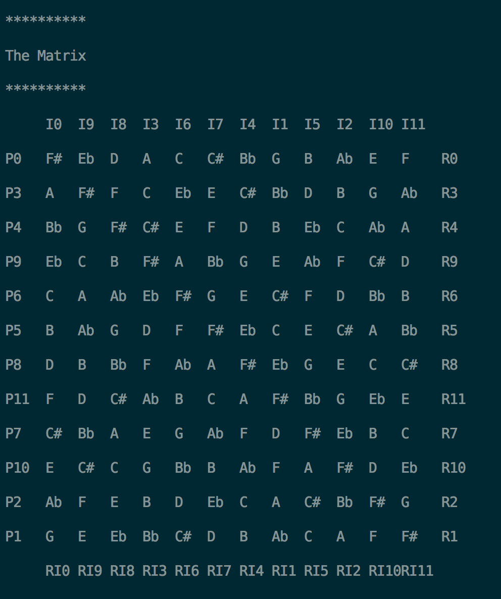

4. Construct a matrix
This program lets the users construct a matrix. Many have written programs similar to this, but few have the ability to write matrixes that are less than or more than twelve tones. This program allows users to write matrixes that are constructed by up to 50 pitches, and are formated with the traditional method of labeling row numbers, where labels for pitches are numbered in relation to their transposition from P0.
This program finds the transpositions between each pitches in the row, then uses this array of transposition indexes to calculate the values for all rows. The transposition function is implemented as follow:
void Modules::transposition(int rType) {
setRow(0, 0, 4); // no transposition for the first pitch
for (int i = 1; i < getRowSize(1); i++)
// initialize a transposition table to find the distance between each pitch in the row
setRow(i, getRow(i, rType) - getRow(i - 1, rType), 4); // start with subtracting the 1st pitch from the 2nd pitch
}A sample output of this program looks like the following:
5. Construct a matrix in rotation
Similar to the previous matrix program, this program additionally allows users to print the matrixes in rotation to the right or left by one index (one column) at a time, changing the pitch sequence of all the rows. For example, rotating the row C-D-E to the right by one, the sequence would become D-E-C.